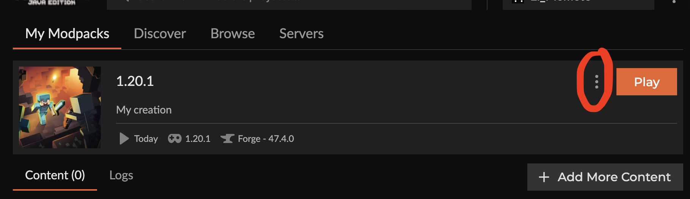

Required Mods
CurseForge Mod Install Guide shortcutLoading mods (will not load if empty or error)
CurseForge Mod Install Guide
- Open CurseForge
- Select the minecraft game
- Selected the 1.20.1 profile
-
Open profile options
 - Click open folder
- Enter to [Profile Name] > mods folder
- Add the mod to the folder.